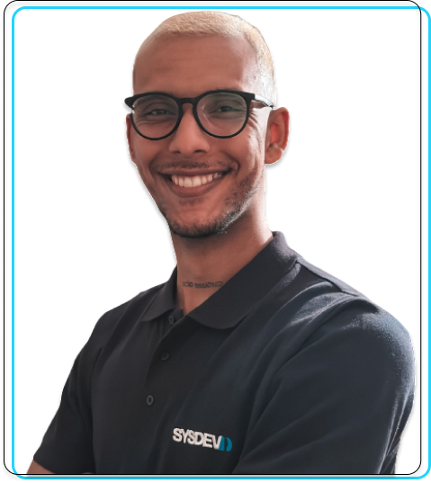

Curriculo
Sou Matheus, tenho 24 anos de idade. Nasci no Brasil e atualmente moro em Portugal.
Sou mais apaixonado por Tecnologia e estudo TI desde os 11 anos de idade e estou terminando licenciatura em Engenharia Informática.
Hoje trabalho como Técnico de Suporte e me especializei em Programação, mais especificamente em C# e Python.
Experiências
Sysdev Mobile Computing [2020 - 2022 ]
Serviço de Suporte no software MSS (Mobile Sales System) e Kalipso Studio (Mobile Application Generator) para
clientes e parceiros da empresa via telefone ou tickets, utilizando a plataforma Zoho. Também trabalho freqüentemente na linguagem SQL (SQL Server e SQLite) e na própria linguagem do software Kalipso
DevPro Informática [2018 - 2022 ]
HelpDesk| Administração de Rede | Manutenção e Montagem de Microcomputadores | Desenvolvimento de Websites | Consultoria em TI
Urban Arts [2020 - 2022 ]
Gerenciamento do Setor de TI | Sistemas de Suporte ao Cliente | Administração de Sistemas
